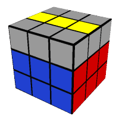
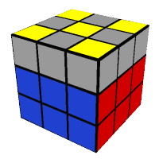
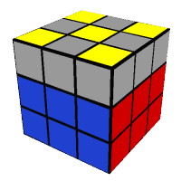
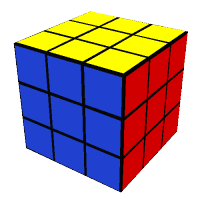

All Problem Can Be Solved
All Problem Can Be Solved
All Problem Can Be Solved
All Problem Can Be Solved
This website will teach you three ways of solving the Rubik's Cube that I call beginner, intermediate, and advanced. I advise you to start with the beginner method, as this will take you to completely solving the cube unaided even if you've never picked one up before. The further two methods assume you can already solve a cube, so these are aimed at those who want to start their speedcubing journey of whittling their times ever downwards.
Let's begin!
The first thing to know about the cube is that it is usually solved layer by layer. Trying to do it face by face is practically impossible, as you can't complete the later faces without screwing up the ones you may have already done. The second thing to know is that the middle pieces don't move. Go ahead, try and move them. They rotate, but they never move in relation to each other, which means that each face will always be that face. A common mistake people make when they first approach an unsolved cube is to think they have to solve 54 stickers. In fact, there are only 20 pieces that actually move around - 8 corner pieces and 12 edge pieces.
The first thing you have to do is to create a cross on the first layer, like so:

Grey 'cubies' (the smaller cubes that make up the Rubik's Cube) are cubies that are not important at this stage, and you can just ignore them.
You will notice that this cross is white, a decision not made at random. Throughout this website, it will always be assumed that the first face is the white face. Every single time you do the cube, you should start with the white face so you get used to always looking out for the same colours at different stages. If I were to pick up a cube and start with, say, the green face, I would get terribly confused when it came to the last layer because I am so used to looking for yellow pieces instead of blue ones. Most other Rubik's Cube resources also start with the white face, so if you get used to it now you'll always know precisely what's going on.
Explaining exactly how to create this cross can be a little challenging, as it relies mostly on logic. Later in this guide, I will be able to tell you exactly which moves to perform in sequences called algorithms but because you are starting from a scrambled cube, this step will be different every time. I heartily recommend that you see if you can just work out how to assemble this cross, if not as a mental exercise then as a bit of fun. If you are struggling, or don't think this qualifies as fun, or perhaps if you're only here to learn to solve a Rubik's Cube as soon as possible in order to win a bet and aren't interested in whimsical things like fun, then there are some scenarios you can watch out for:
 F R
F R
It is also important to remember that the edge colours have to be aligned with the centres like this:

and not like this:
The next step is to put the corners in, like this:
Just like the edge pieces before, it is important that the corner pieces match with the pieces around it, i.e. not like this:
The corners will most likely be on the bottom layer. It is important to first put the cubie you wish to move underneath where it needs to go. That is, the white-blue-red cubie should be underneath the white-blue-red corner. There is an algorithm for each situation:
(Here, the white sticker on the corner is on the bottom.)
In some cases, the corner will be on the top layer but just needs reorienting, for example:
The last three moves are from before - the cubie just had to put in the proper place first.
If a corner cubie is in the top layer but in the wrong place, it also needs to be taken down to the bottom layer. This can be done with either of the following algorithms:
Once the cubie is on the bottom layer, it can be put it in the correct place by using the above algorithms. When you can, always try to use one of the first two algorithms instead of the third as they are shorter and will save you time.
The next step is to put the four second layer pieces in the right place, like this:
The first thing to do is to turn the cube upside-down so you can see what you are doing:
Then find the piece that you need to put in the correct place - in this case the blue and red edge piece. Turn the top layer until you find one of these two situations:
To put the piece in the correct place, you need one of two algorithms. They are the inverse of each other, and they make the edge piece in the top layer go either left or right. These are the longest algorithms that you will need to learn:
Makes the top piece go right
Makes the top piece go left
Sometimes, the second layer is sneaky and will throw this sort of situation at you:
Here, none of the second layer pieces are in the right places but you can't get to one of the above situations. To fix this, just do the algorithm anyway. In the above picture, using the first algorithm on the yellow-red edge piece will displace the orange-green piece, like so:
Now that the orange-green piece is in the top layer, you can solve it like normal.
Sometimes, you may meet this situation:
You can solve this in the same way as before, by using the normal algorithm on a yellow edge piece and displacing the red-blue piece so it can be solved as normal. Or, if you're feeling clever, you can show it who's boss and give it a bit of the old R U' R' U F' U2 F U F' U2 F.
There will be times where there is a piece where another piece needs to go, like this:
Don't be tempted to remove this piece in order to put it in the right place, as that takes time. Instead, put the red and blue piece there like normal and this will displace the foreign piece. This way, the algorithm only needs to be done once and not twice. The foreign piece can then be put in its correct place like normal.
As the name suggests, this stage comprises of creating a cross on the last layer, like this:
This can't be done in the same way as the first cross, so there are two small algorithms to learn.
Before you begin, you will be in one of four situations:
L, for example:
Line, for example:
Dot, for example:
 

Cross, for example:
Each situation is treated slightly differently, and for your convenience the algorithm for each situation is written below. Obviously, if you already have a cross, move on to the next step!
Make sure you hold the L in the top left corner (like in the picture)
Make sure you hold the line horizontally
Use both, in either order.
Using the L algorithm gets you to a line, so you can then use the line algorithm, and vice versa
This step will change the orientation of the edges of the cross you just created to line up with the centres, like such:
There is one algorithm to achieve this:
R U R' U R U2 R'
However, you must make sure that you hold the cube the correct way before applying the algorithm. You need to turn the up face until two of the edge pieces are in the correct position, so that the colours line up with the centre pieces. There will always be two that are correct, and they will either be opposite or adjacent to each other. Keep turning the up face until you find them!
If they are opposite each other, apply the algorithm while holding one correct edge facing away from you and the other facing towards you, like this:
The green edge here is correctly aligned, facing away
You now have to repeat the above process - look for the two correct edge pieces, and hold them correctly before applying the algorithm. They won't be the same two pieces as you had before. In this example, the blue and green edges were correct and held opposite to each other, and now the red and blue edges are correct.
The two adjacent correct edges need to be held so that one is facing away from you and the other is in your right hand. In this example, where the blue and red edges are correct, it would be held like this:
Applying the algorithm again will correctly align all the edge pieces, but a further U may be needed to ensure they are all in the right places before moving on.
This step alters the corners so they are all in the right place but not necessarily in the right orientation, like this:
This is just an example - your corners may be in a different orientation once you've done this.
First thing to do is to examine your cube and see if there are any corners that are already in the right place, like the red, blue, and yellow one in the picture above. If there are any, there will either only be one correct or they will all be. If they are all correct then you can merrily skip to the next step, but if there are two or three correct then you can merrily skip to this FAQ answer because, tragically, your cube is unsolvable.
The blue-red-yellow corner in the image is the only correct one, as even though it isn't facing the right way, it is in the correct place. We call this place on the cube the FRU corner, because it is the corner formed by the Front, Right, and Up faces. For this step, you need to turn the whole cube so that your correct corner (if you have one) is in the FRU corner before you do the algorithm. If you don't have any correct cubies, then it doesn't matter which cubie is in the FRU corner.
The algorithm is this:
U R U' L' U R' U' L
After the algorithm, the corner cubies (except the one in the FRU corner - your possibly correct one) will have changed around. This means that you will now have at least one correctly positioned cubie. If you only have one, do this step again, remembering to hold the correct cubie in the FRU corner. If the corner cubies still aren't all in the right place, keep doing this step until it is - it may take two or three times for them all to be correct.
This is the last step, so it will result in the completed cube:
I advise that you read through this section completely before attempting it. If you mess it up, you'll ruin everything, become sad and frustrated, and have to start all over again.
There is only one algorithm for this section:
R' D' R D
This algorithm gets applied multiple times to each incorrectly oriented cubie (that is, every corner cubie that does not have yellow on the top). If you don't have any, congratulations! You've solved the Rubik's Cube. But if you do, read on.
Firstly, hold the cube so that an incorrect cubie is in the FRU corner (which you'll remember is the corner formed by the Front, Right, and Up faces) which, in this case, is the blue-red-yellow corner. You will then need to apply the algorithm either two or four times, depending on which way the yellow side of the cubie is facing:
When you are doing these algorithms, try and bear in mind two things. Firstly, Ds in an algorithm can throw people off because it's easy to mix up D and D'. Remember that D is turned clockwise as if you were looking directly at the down face. You can always refer back to the notation page to see exactly what that looks like. Secondly, don't forget to do the last D each time you do the algorithm. You want the yellow face of the cubie to be pointing upwards, but this will actually occur when you execute the R in the last algorithm. It is super important to not forget the D that comes after it!
Once the two or four algorithms are completed and the cubie is happily yellow side up, you have to do the same thing again on the next incorrectly oriented cubie. To do this, twist only the up face until another incorrectly oriented cubie is in the FRU corner, and do the algorithms again on that incorrect cubie. At this point, you will notice that the bottom two layers of the cube have become a jumbled mess. Worry not! They are sensible, and will resolve themselves once you have finished the algorithms on the last incorrect cubie.
Once these algorithms are complete, you are only one or two turns away from completing the Rubik's Cube.
Congratulations!